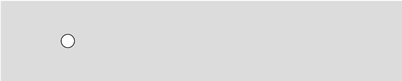
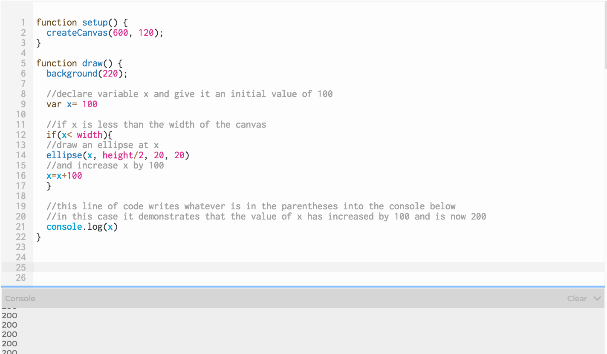
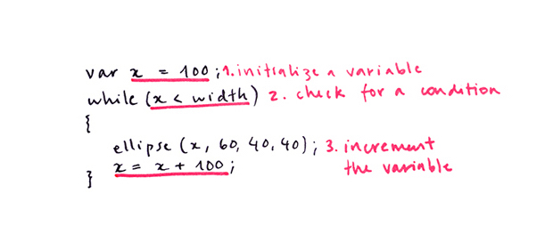

Overview
This lesson introduces repetition using while loops. Students will create a sketch with a repeated element to fill a specific space.

Overview
This lesson introduces repetition using while loops. Students will create a sketch with a repeated element to fill a specific space.
Suggested Duration
45 minutes
Objectives
Students will be able to:
Student Outcomes
Abstraction:
Algorithms:
Prototype:
Vocabulary
| Loops | A sequence of instructions that is repeated until a certain condition is met. |
|---|---|
| Iterations | The repetition of a process or utterance. |
| While Loop | The while loop loops through a block of code as long as a specified condition is true. |
Resources
Draw the Same Shape Many Times
Suppose we want to draw five circles on a horizontal line, 100 pixels apart from each other. We might do it this way:
Now draw these ellipses 50 pixels apart from each other.
It's very tedious to recalculate all of the x positions and update them for all five ellipses.
Repeat Shapes With A While Loop
In writing the code above, we followed a thought process similar to this:

Our ellipse on the left of the screen begins our row of ellipses is at 100 pixels. We draw a new one every 100 pixels, so there's one at 200, another at 300 etc. We want a new ellipse every 100 pixels until we get to the end of the screen. We can do this with a few lines of code instead of programming each ellipse separately.
We already know how to write conditional statements, so we can just write a statement that says, the x location of the ellipse is 100, if x is less than the width of the canvas, then draw an ellipse at x and add 100 to x every time you draw an ellipse.
We can approximate this process in code like this:

Click here to try it and see what happens.
The following example shows the conditional statement that we just described. We declared a variable called x and initialized it to 100. If x is less than the canvas width, we drew an ellipse at the x-location of x (which is 100), but then increased x by 100.
You'll notice a line of code "console.log(x)". Our console helps us debug our code and will write the value in the parentheses into the console. In this case, it shows us that x did indeed increase by 100, but there is still only 1 ellipse on the screen. If the value of x is now 200, why is there no ellipse drawn at 200 as well?


You might remember when we began to work with conditional statements that we spoke about how a conditional runs until it evaluates to "true" and then it moves on. In this case, if x is less than width (which it is to begin with), an ellipse will be drawn at x, and x will be increased by 100. Then the code will continue until the end of the draw loop and repeat the draw loop again (which sets x to 100 all over again.)
We need that conditional statement to repeat itself until the conditional is no longer true.
There is a control structure called while loop that does this for us and it's one structure that we use for repetition. A control structure is a block of code that dictates the flow of the code:

There are three steps we need to take to have our while loop work correctly.

Our code is cleaner now, but the benefit of using a while loop is how easily we can change it. Say I wanted a row of ellipses with the same spacing, but I wanted the row to start at the beginning of the canvas.
I will "initialize" variable x to 20 because the ellipse is 40 pixels wide and if I set x to 0, half of my ellipse would be off the canvas.
Notice how the program added an extra circle and we didn’t even have to ask. That happens because the program will continue to draw circles as long as x is less than the width of the canvas.
The spacing between the shapes is based on the number by which we increment the variable. In the previous examples, we added 100 to x every time the loop ran. What happens if we only increment the variable by 40 (the width of the ellipse)?
Exercise 1: Play With While Loops
Use the loop to make the following changes:
Exercise #2: Use a while loop with multiple shapes
Now that we know how to draw a shape repeatedly by incrementing a variable, we can think about adding other shapes to our loop that also use our x variable. Try creating a design that you can repeat inside a while loop.
The following example uses multiple ellipses with the same location but with different sizes.
This example requires thinking about how to draw more shapes and place them in relation to the x variable which we have done before in a previous lesson.